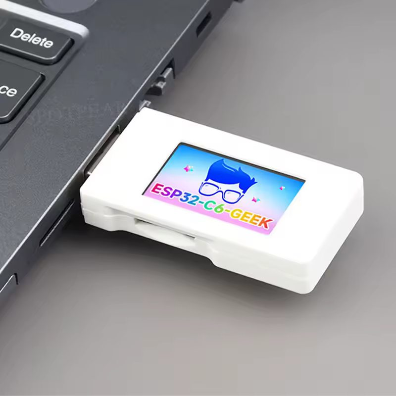
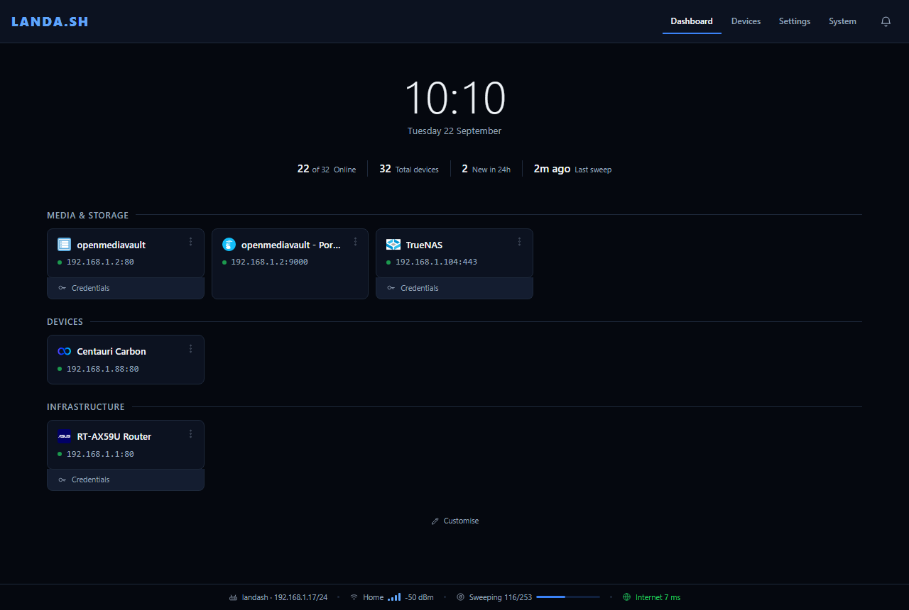
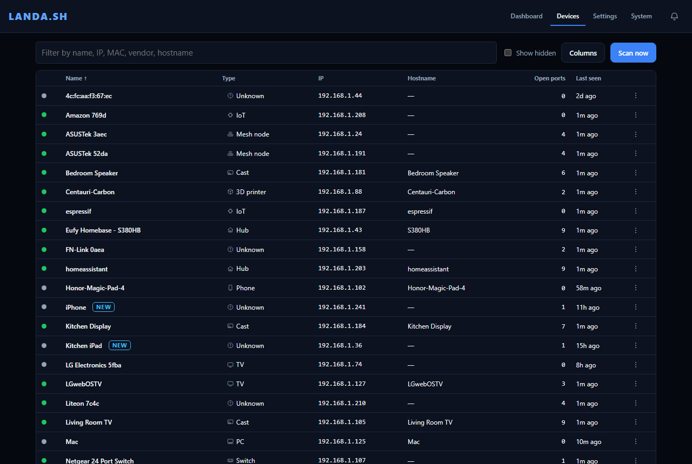
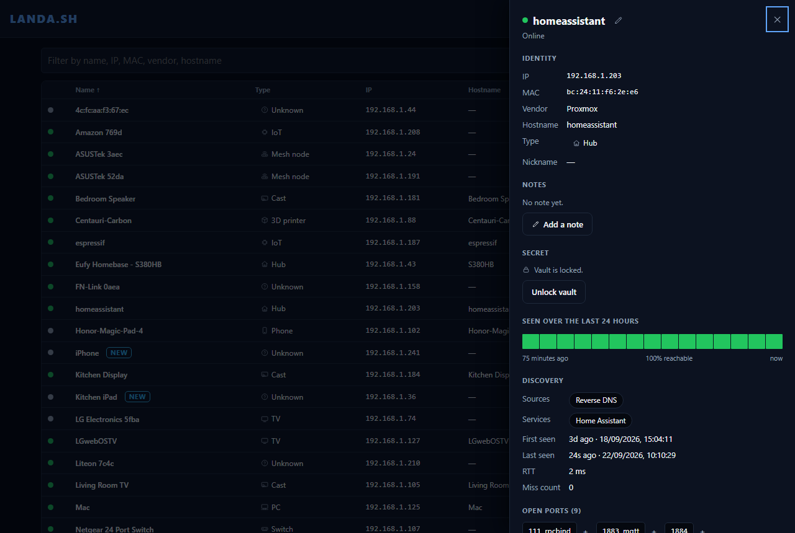

The standalone homelab dashboard that maintains itself.
A USB dongle that finds every device and service on your network and builds the dashboard for you, no server or containers required.




How it works
Stop maintaining your dashboard.
Hand-written dashboards go stale when an IP changes. LANDA.SH watches the network instead.
- 1Plug it in
Any USB port. It joins your Wi-Fi and shows its own address on the screen.
- 2It finds everything
A paced ping and ARP sweep every few minutes, names pulled from mDNS, SSDP, NetBIOS and the router's own DNS, vendors read off the MAC. Ports get scanned too, slowly, in the background, so your network barely notices.
- 3Pin what you use
One click on an open port makes a tile, and it follows the device if the IP changes later.
Why I built this: I'm lazy. Every time I wanted to reach my NAS I had to log into the router first to find its IP, so in practice I never bothered and fell back to Google Drive. Now there's a tile for it, and it doesn't move.
Phil Strong, pstrong.co.uk. Built with the help of Claude Code.
Never goes stale
Tiles follow the device through IP changes and show whether each service is actually answering.
Tells you what changed
New devices, ports opening or closing, and internet or DNS outages, so you hear about it rather than stumble on it later.
Passwords beside services
An encrypted vault (AES-256-GCM) for router and NAS logins, opened with a passphrase that's never stored on the dongle. Worth knowing: the dashboard itself is plain HTTP with no login, so this is built for a trusted home network, not the open internet.
Updates itself
New releases install over the air and roll back if one doesn't boot.
The hardware
One dongle. No server.
LANDA.SH runs on the Waveshare ESP32-C6-GEEK, a USB stick with Wi-Fi and a small colour screen.
- 2.4 GHz Wi-Fi 6
- 1.14" screen
- 16 MB flash
- USB-A
Not an affiliate link. LANDA.SH isn't connected to Waveshare or the seller and can't vouch for either. It must be the ESP32-C6-GEEK; other boards won't work.
Open source
Firmware and dashboard, on GitHub under the GPL-3.0 licence.
Your device list stays on the dongle. It only reaches out for the time, a connectivity check and updates.
View on GitHubInstall
Straight from this page.
Chrome or Edge, over USB. After that, it updates itself.
- Plug the dongle into this computer
No dongle yet? See above.
- Install
Press Install, choose USB JTAG/serial debug unit and confirm. Takes about a minute.
- Connect it to your Wi-Fi
Join the
LANDA-XXXXnetwork shown on the dongle's screen, openhttp://192.168.4.1and pick your Wi-Fi. - Open your dashboard
Go to
http://landash.local, or the address on the screen.
Install LANDA.SH
New board? Tick Erase device. Reinstalling? Leave it unticked to keep your data.
Nothing in the list? Try another cable.